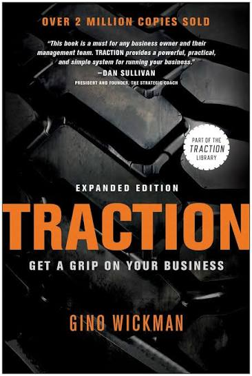

Traction sets out the Entrepreneurial Operating System (EOS), a way of running a company that the author organises into six components: Vision, People, Data, Issues, Process and Traction. The pitch is that many owners struggle less from a lack of ideas than from the lack of a shared, repeatable way to turn plans into results.
The book walks through each component and pairs it with a simple tool: the Vision/Traction Organizer (V/TO), the Accountability Chart and People Analyzer, the Scorecard, the IDS issue-solving method, documented core processes, and the Rocks and Level 10 Meeting rhythm. It then covers how to start. Its value is in being a compact toolbox rather than in new theory.
Companion page: What the Heck Is EOS? explains the same system from an employee's point of view. This page is the leader's view: how the tools are built and what an owner is meant to do with them.
Introduces EOS and its six components as a connected model. The idea is that a business is only as strong as its weakest component, so the components are worked on together rather than one at a time.
Expect a self-assessment of how solid each component is at the moment, and the case that a shared system helps owners who feel stretched thin.
The image in the title is about releasing a familiar hold to reach the next one: founders have to give up some control for the company to grow. The chapter is about the leader's mindset before any tool is introduced.
It is also where the Visionary and Integrator roles are introduced. The Visionary generates ideas and relationships; the Integrator runs the business day to day and keeps the leadership team accountable. It also sets the ground rules a leadership team is meant to adopt, such as being open and honest, and keeping things simple.
Introduces the Vision/Traction Organizer (V/TO), a two-page summary of where the company is heading. Its eight questions are widely described in EOS material:
The aim is that everyone can see the same plan, so it is meant to be shared, not filed.
Covers the idea of "right people in the right seats". The People Analyzer compares each person against the company's core values; GWC (Get it, Want it, Capacity to do it) tests whether a person fits their specific seat.
The Accountability Chart is the structural piece: instead of a plain hierarchy, it asks which seat owns which functions and roles, and whether the right person is in it. It exposes gaps and overlaps, which many teams find uncomfortable.
The case for managing from numbers rather than impressions. The Scorecard is a weekly set of measurables, each with an owner and a goal, so that off-track items show up quickly and go onto the issues list.
The emphasis is on a small number of meaningful, usually leading, measures rather than a dashboard of everything.
Introduces IDS: Identify the real issue, Discuss it until everything relevant has been said, then Solve it with a decision and a to-do that has an owner and a date. The point is that issues which keep returning have not actually been solved.
It pairs naturally with the weekly meeting, where most of the time is spent on this method.
About naming the handful of core processes a company runs on, documenting each simply, and making sure they are Followed By All. The tone is that a short, usable document beats an exhaustive manual that nobody opens.
The benefit it describes is consistency and scalability, so results depend less on who happens to do the work. For a fuller treatment, see the companion Process! review.
The execution layer. Rocks are the few most important priorities for the next 90 days, set for the company and for each leader. The Meeting Pulse is the rhythm that keeps them alive: an annual planning session, a quarterly session and a weekly Level 10 Meeting.
The Level 10 agenda is fixed and widely described: a short check-in, Scorecard, Rock review, headlines, to-do review, then most of the 90 minutes on IDS and a quick wrap-up with a rating. See the agenda chart in the next tab.
Shortform's structure groups the last two chapters under implementing EOS, and one search summary mentions a chapter on pulling everything together. I read this as the chapter that links the six components into one working rhythm: how the V/TO, Rocks, Scorecard and meetings connect.
My illustration, not from the book: a team could review the V/TO at a quarterly session, pick two Rocks from the 1-year plan, then watch them week by week in the Level 10.
The practical close: how a leadership team might begin. Expect advice on sequencing the tools, on how long it takes to embed the habits, and on whether to self-implement or work with an EOS Implementer (a certified coach who runs the system with a company).
I could not confirm the specific timelines or sequence the chapter recommends, so I have not stated them. Check the book for these.
Everyone shares the same picture of where the company is going. Tool: the V/TO.
The right people (values fit) in the right seats (GWC). Tools: Accountability Chart, People Analyzer.
A few weekly numbers give an objective pulse. Tool: the Scorecard.
Problems are named and solved, not carried. Tool: IDS.
Core processes documented and Followed By All.
Discipline and accountability. Tools: Rocks and the Meeting Pulse.
The weekly leadership meeting is 90 minutes with a fixed order. The minutes below are the commonly published EOS agenda; I could not check them against the book text.
Two short interactive tools. Both are my own illustrations of the framework, not a test from the book, and nothing you enter is saved or sent.
Think of one person in one seat. Toggle what is true.
How this page differs from What the Heck Is EOS?: that companion looks at the system as an employee meets it, with a manager's-questions list. This one stays with the leader's tools and how they fit together.
The tools the book introduces, described from my reading of its structure and EOS material. The questions and the practice plan are my own suggestions, not content from the book.
The two-page plan.
Shows seats, the roles in each, and who sits there.
Values fit for the person; Get it, Want it, Capacity for the seat.
A few weekly numbers, each with an owner and a goal.
Identify, Discuss, Solve.
90-day priorities and the weekly meeting.
V/TO
Right People, Right Seats
GWC
Accountability Chart
Scorecard
IDS
Rocks
Level 10 Meeting
Visionary and Integrator
Followed By All
A plan nobody can see cannot align anyone.
An issue that keeps coming back has not been solved.
A short list of priorities gets done; a long list does not.
A fixed meeting agenda protects the time for real problems.
| Category | Claude | Dan | Why Claude scored it that way |
|---|---|---|---|
| Ideas | 3.5 | 4.0 | A well-integrated system, but the individual tools are mostly established management ideas packaged together. The integration is the contribution. |
| Readability | 4.0 | 3.0 | Reviewers describe it as accessible and easy to follow; the component-per-chapter structure is clear. |
| Actionability | 4.5 | 4.5 | Each chapter ends in a named tool that a team could try within a week. Its main strength. |
| Evidence | 2.0 | 3.0 | Built on the author's experience and client stories. I found no independent study of EOS outcomes in what I read. |
| Category average | 3.50 | 3.63 | Claude's overall 3.5 is about 0.64 below the only average I could find (4.14, from a third-party site, not Goodreads itself). I weigh evidence and originality more heavily than many readers, who are likely rating how useful the toolkit was to them. Because the Goodreads figure was not readable, treat the gap as indicative only. Dan's overall of 4.0 sits 0.38 above his own category average of 3.63. Against Claude he scores Ideas 0.5 higher, Readability 1.0 lower, Evidence 1.0 higher, and Actionability the same (4.5). |
Categories are the same four used for every review: Ideas, Readability, Actionability, Evidence.
Goodreads: average, rating count and star distribution are not available. The book pages I tried (several edition IDs) returned either no content or an error on 12 Nov 2026, and I could not confirm any edition was the right book, so I have recorded no Goodreads numbers. Third-party figure, unverified: Read This Twice shows a Goodreads rating of 4.14 from roughly 11,000 ratings; I could not tell how recent that is and it may be a stale or partial snapshot.
What you may have missed: the book is both a manual and the front door to a commercial ecosystem of EOS implementers and certified coaching. That does not make the ideas wrong, but most praise comes from people inside or adjacent to that world, and I did not find independent outcome studies. Treat results claims as testimonials.
Single-source flags: the chapter titles for Chapters 1 and 9 rest on one source each, and the 4.14 figure rests on one third-party site. The criticism sources I could read were few, so this page may understate real-world objections, such as how heavy the system can feel for a small team.
Dan rates Traction 4 out of 5. He scores the ideas 4, readability 3, actionability 4.5 and evidence 3. His company has effectively been living these concepts since he joined. He read the book last December, so he finds the detail hard to recall, but he remembers thinking well of it.
He sees it as very good at surfacing issues and keeping a team on track towards its vision. His main caution is that the system is regimented and needs complete buy-in from the top down, especially from the leadership team: if not everyone at the top is committed to the process and to carrying the vision through with the rocks, it is hard to move forward.
His one criticism is that the book spends little time on how to get that buy-in from the people around you, and concentrates on how to run things once buy-in exists. He thinks getting everyone to commit to the process is the biggest step and can be the hardest one.
Written up from Dan's own words (12 Nov 2026), recalled from a read about a year ago. His view stands apart from the Claude and reader views above.
A plan becomes real through a small set of habits repeated on a schedule: a shared written plan, clear ownership of seats, a few weekly numbers, a method for settling issues and a fixed meeting. The tools matter less than the discipline of running them every week.
Traction is a practical toolbox for leadership teams, strongest on actionability and structure and weakest on independent evidence. Its contribution is bundling familiar management ideas into one system a team can start using.
Read it as the leader's manual for EOS, and pair it with your own judgment about whether the system suits your company. Dan's rating is still to come.